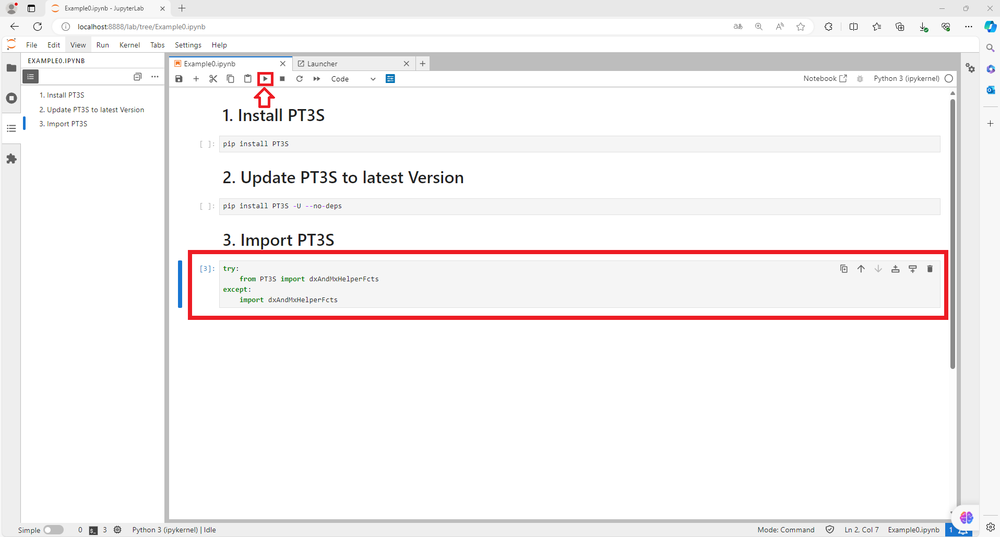

Getting Started
Welcome to the Getting Started guide for PT3S! This guide is your first step towards understanding and utilizing PT3S. The purpose of PT3S and its applications will be explained.
In this guide, we will walk you through the initial setup process and equip you with the necessary resources to explore PT3S further.
Why Jupyter Notebooks, Python and PT3S are valuable when Working with SIR 3S
SIR 3S has its core competencies, cannot do everything and cannot want to do everything. Almost everything that SIR 3S does not (yet) offer in Pre- and Postprocessing can be done with Jupyter notebooks. When working with SIR 3S, switching to Jupyter notebooks (from Excel, QGIS, etc.) can be a game changer moment. We do not recommend replacing tools like Excel or QGIS with Jupyter notebooks. For SIR 3S users with programming experience, it is worth taking a look at the power of Jupyter notebooks and Python.
There are several reasons why Jupyter notebooks and Python are so popular. They offer a unique blend of interactivity, readability, ease of use, and powerful functionalities, making them a go-to tool for data scientists, analysts, and anyone working with data exploration and analysis.
At the moment, PT3S is just a collection of functions intended to simplify the use of SIR 3S model data and SIR 3S calculation results in notebooks.
PT3S is only of interest to users with access to SIR 3S models.
And for users of pipe network calculation software who are looking for a new software that works with Jupyter notebooks and Python. PT3S comes with uncalculated SIR 3S sample models. Access to SIR 3S’ SirCalc is necessary to (re-)calculate the models. SIR 3S itself is not part of PT3S.
Note
If you have already installed Anaconda (Jupyterlab) and PT3S and you are familiar with their general usage, you can visit the For Developers page for more technical information, such as how to contribute to PT3S.
Install Anaconda
To install Anaconda, follow these steps:
Download Anaconda: Visit the official Anaconda download website and skip the registration process. Download the version that is compatible with your operating system.
{kind=link}
Install Anaconda: Launch the downloaded installer and follow the setup wizard to complete the installation. Under “All” in the Windows start menu, you should now find an Anaconda3 folder.
Note
For the recommended versions of Anaconda and other tools used in this project, please refer to the Environment Versions section
{kind=link}
How to Start JupyterLab
To start JupyterLab and have certain Notebooks at hand, follow these steps:
Locate Notebook directory: Find the parent directory of the Notebook or multiple Notebooks, you want to open, and copy the path (This directory can also contain non-ipynb files).
Open Anaconda Powershell Prompt: This is located in your Anaconda3 folder.
Navigate to the notebook directory: Use the
cdcommand followed by the copied path to the Notebook directory.cd "path_to_your_notebook_directory"
Start JupyterLab: Enter the following command.
python -m jupyterlab
A JupyterLab browser tab should now open.
Open Notebooks: Each Notebook in the Notebook directory can now be opened individually on the far left side of the tab.
{kind=link}
Getting Started with PT3S
Install PT3S
To install PT3S using this documentation, follow these steps:
Download Example0: Download Example 0: Installation.
Open Example0.ipynb via JupyterLab: Instructions on how to open ipnyb files are explained in detail at How to Start JupyterLab.
Run 2nd cell:
pip install PT3S
{kind=link}
Update PT3S
To update PT3S to the newest version using this documentation, follow these steps:
Download Example0: Download Example 0: Installation.
Open Example0.ipynb via JupyterLab: Instructions on how to open ipnyb files are explained in detail at How to Start JupyterLab.
Run 4th cell:
pip install PT3S -U --no-deps
{kind=link}
Import PT3S into Notebooks
To import a certain PT3S module into your Notebook, use the following commands. The dxAndMxHelperFcts module, which is used in the example, contains basic PT3S functions.
try:
from PT3S import dxAndMxHelperFcts
except:
import dxAndMxHelperFcts
To try this inside an Example Notebook, follow these steps:

Download Example0: Download Example 0: Installation.
Open Example0.ipynb via JupyterLab: Instructions on how to open ipnyb files are explained in detail at How to Start JupyterLab.
Run 6th cell:
{kind=link}
Congratulations on successfully installing and importing PT3S! You now have the power of PT3S’s functions at your fingertips. To delve deeper into these functions and their applications, we invite you to explore the Functions page.
PT3S is versatile and caters to a variety of use cases. To gain insights into these use cases and understand how PT3S can be leveraged in different scenarios, we encourage you to visit the Examples page.